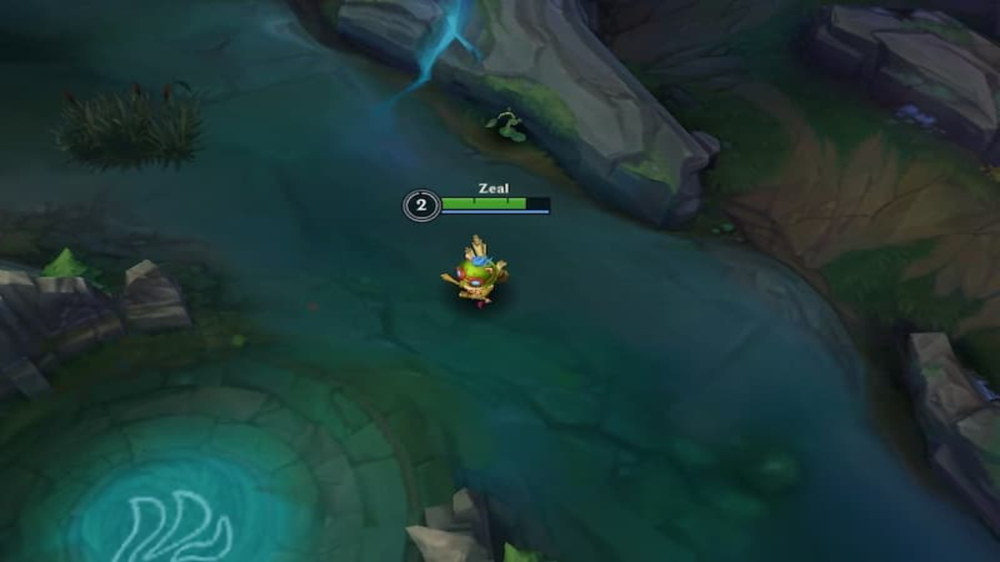

A Jungle é o espaço entre as pistas que você vê no mapa. Na Jungle, existem muitas paredes e caminhos estreitos. Dentro desse lugar estão os acampamentos pertencentes aos monstros da Jungle. Esses monstros podem ser mortos por qualquer membro de qualquer equipe, mas são muito mais difíceis de matar do que Minions.

Do centro da Baron Lane e estendendo-se até o centro da Dragon Lane, há um rio que atravessa o mapa (que é onde Teemo está). O rio divide o mapa em dois lados: a Jungle do seu time e a Jungle do time adversário. Assim como as estruturas, essas Jungles se espelham.
Um certo cargo também vai para a selva, chamado de Jungler. Ele vagueia pela Jungle ao início do jogo matando monstros. Eles são especiais por causa do Smite, um feitiço que permite ao usuário invocar um raio do céu para causar dano aos monstros.
Além de matar monstros, os junglers podem ajudar um companheiro de equipe, geralmente tentando matar seu oponente transformando um 1 x 1 um 2 x 1, por exemplo. Além disso, os junglers são muito importantes, pois são essenciais para garantir os objetivos mais importantes no final do jogo, que serão discutidos mais adiante neste guia.
_resized.jpg)
Esses monstros fornecem recursos semelhantes, são apenas ouro e experiência. No entanto, esses campos têm outras características – como os Krugs, por exemplo, que se dividem em unidades menores antes de morrer completamente; e o Gromp, parecido com um sapo, que ataca mais devagar quanto mais tempo você luta.
Quatro diferentes dragões irão aparecer em ordem aleatória. Cada dragão fornece buffs permanentes exclusivos para a equipe que o mata. Os dragões estão na arena circular do rio. Comparado acampamentos na Jungle que são espelhados, este não é. As equipes geralmente se agrupam para matar esse inimigo, pois ele fornece um alto valor. O quarto dragão que surge é um Dragão Ancião e fornece um buff mais forte, incluindo uma queima permanente em seus ataques e habilidades. Entretanto, é muito difícil matá-lo devido ao alto dano e saúde. Ao matar o 4º dragão, nenhum aparecerá mais.

Esses monstros são agrupados por fornecerem recursos semelhantes. Além de ouro e experiência, fornecem buffs – um efeito de status que pode beneficiar quase qualquer atributo de um personagem, como saúde, mana e dano. Esses monstros têm forças semelhantes e são vitais nas fases iniciais do jogo. Um Brambleback dá um buff que não só aumenta suas estatísticas ofensivas, mas também faz seus ataques automáticos queimarem o alvo, enquanto um Sentinela dá uma regeneração de recursos imensa.

Este monstro roxo semelhante a um caranguejo pode ser localizado do outro lado do rio de onde os Dragões estão, em uma arena circular semelhante. O Arauto do Vale é mais fraco em comparação com o Dragão e pode ser pego apenas pelo jungler, acertando seu olho (não no rosto, mas nas costas). Derrotar o Arauto do Vale derruba o Olho do Arauto. O suporte tem tempo de canalização drasticamente reduzido para voltar à base mais rapidamente. Usar o Olho do Arauto invocará o Arauto do Vale fazendo-o lutar pela equipe que o invocou. Em seguida, ele atacará lacaios adversários e causará danos enormes às torres adversárias até ser morto novamente.
10 minutos de jogo, o gigantesco Barão Na’shor, surge no mesmo lugar que o Arauto do Vale reside. É o monstro mais forte e mais difícil de derrotar no jogo. Semelhante aos Dragões, matar o Barão é um esforço de equipe, mas rende recompensas valiosas. Derrotar Barão dará a todos os membros da equipe que o matou um impulso por um período de tempo, o que aumenta suas estatísticas ofensivas, retorno acelerado à base e capacita Minions próximos.